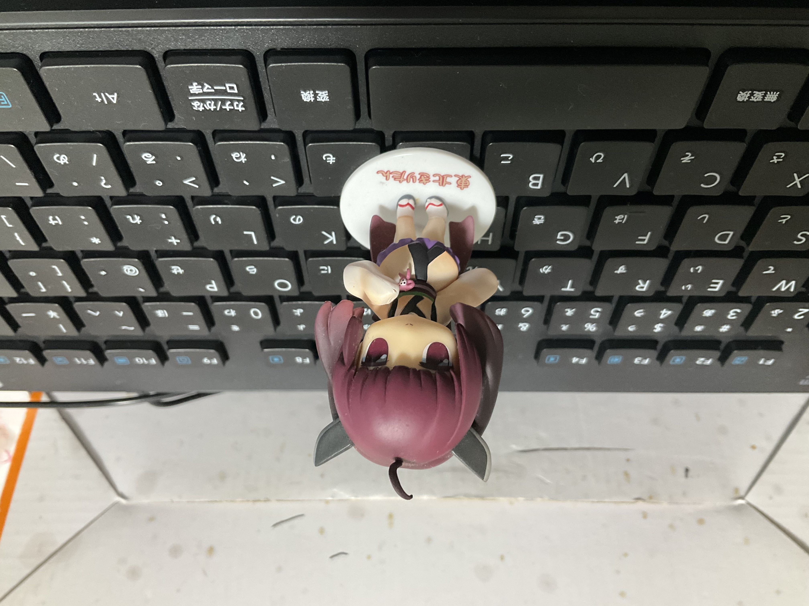
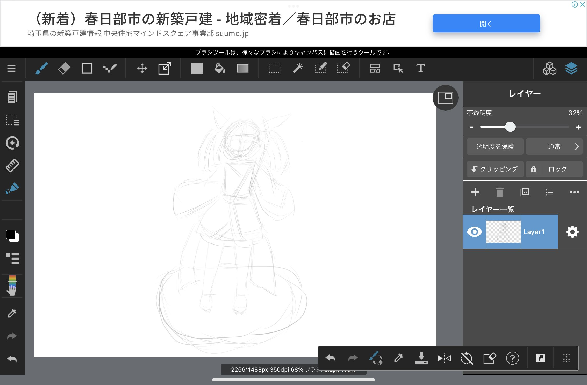
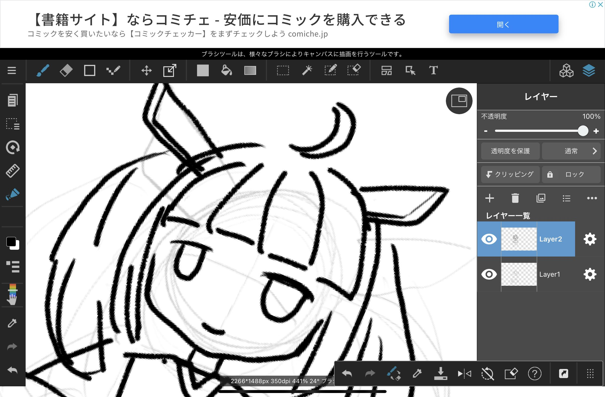
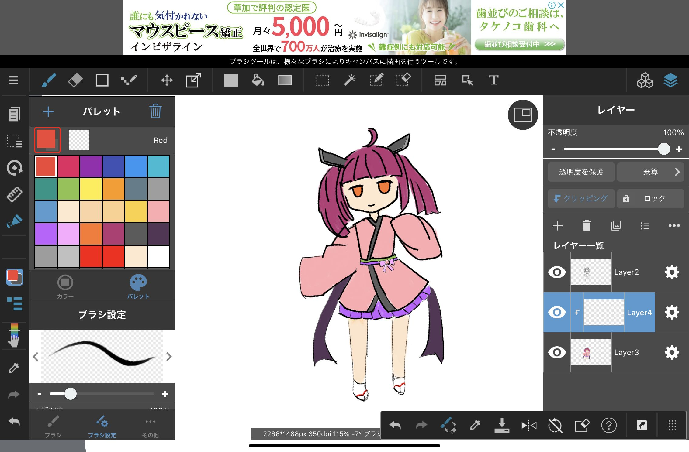
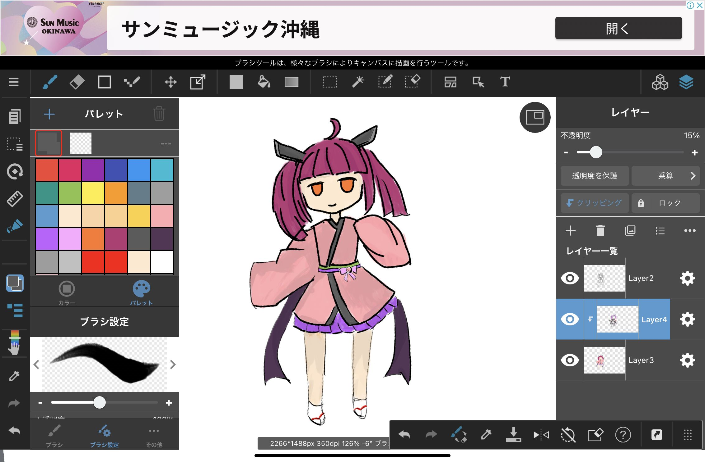
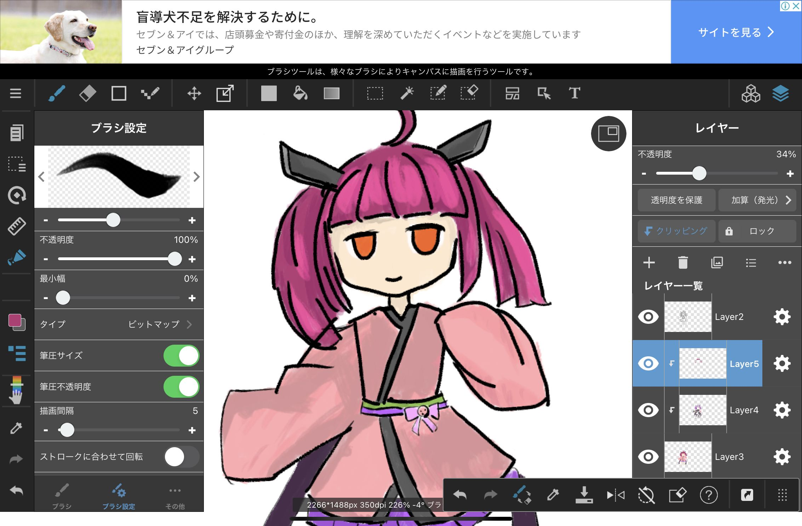
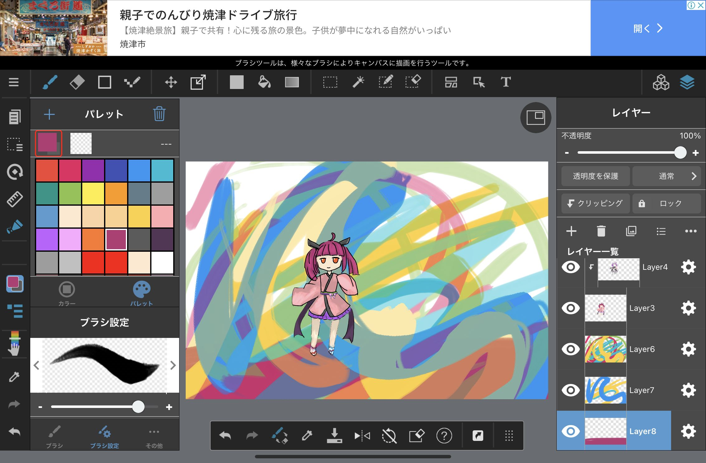

Drawing
環境
PC
お絵かきソフト（メディバンペイント(MediBang Paint)(無料)。またはCLIP STUDIO PAINT(有料))
ペンタブ
ipad
お絵かきソフト（メディバンペイント(MediBang Paint)(無料)。またはCLIP STUDIO PAINT(有料))
Apple pencil
書き方(例 ipad mini 第六世代 + Apple pencil 第二世代 + メディバンペイント(MediBang Paint)(無料))
モデルを用意する。2次元絵でも3次元モデルでも可
アタリ(キャラクターの顔や体をバランスよく描くため、線を引いて大まかな位置取り)を描く(アタリレイヤー)
ペンはGペン
サイズは細め(4.8px)
不透明度を少し下げる
レイヤーを変えて詳細を実線を描く。(実線レイヤー)
拡大したり、紙の角度を変えて描いてもいい。
レイヤーを変えてベースの色を塗る。(ベース色レイヤー)
影の部分を描く。(影レイヤー)
レイヤー一覧を実線が一番上、その下影、その下ベースの色にする。実線を下にしたりすると、線が見えなくなる。
影レイヤーの不透明度を調整する。濃すぎるのも良くないような。
乗算を使用するとよい
クリッピングすると、ベースの色からはみ出さないので便利。
ベースの色と同じでも濃くなる？もっと暗い色を使用する？
髪の下、服の影の部分を塗る？
光の部分を描く(光レイヤー)
影レイヤーの上に配置する。
クリッピングしてもよい。
加算(発光)を使用する。
もっと明るい色を使えばよかった。わかりずらいような。
背景を描く(背景レイヤー)
背景何かいたらいいか良くわからない。
書き出して完成